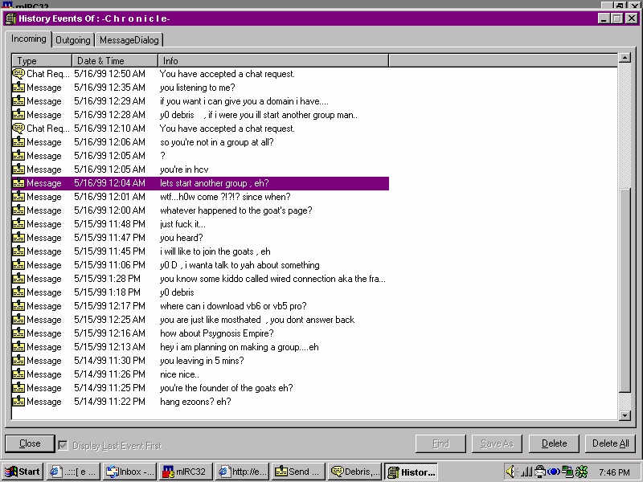

with Ada.Text_IO; 
use Ada.Text_IO;
Procedure exo2060 is
Begin
put("Exo2060"};
New_line(2);
put("Are fucking faggots");
New_line(2);
put_line("They are also fakes");
put_line("they hate me yet bow to me");
put_line("Look at the image on the bottom for proof");
put_line("Could it be, an exo member bowing to me?"];
put("Debris owns exo2060");
end exo2060;